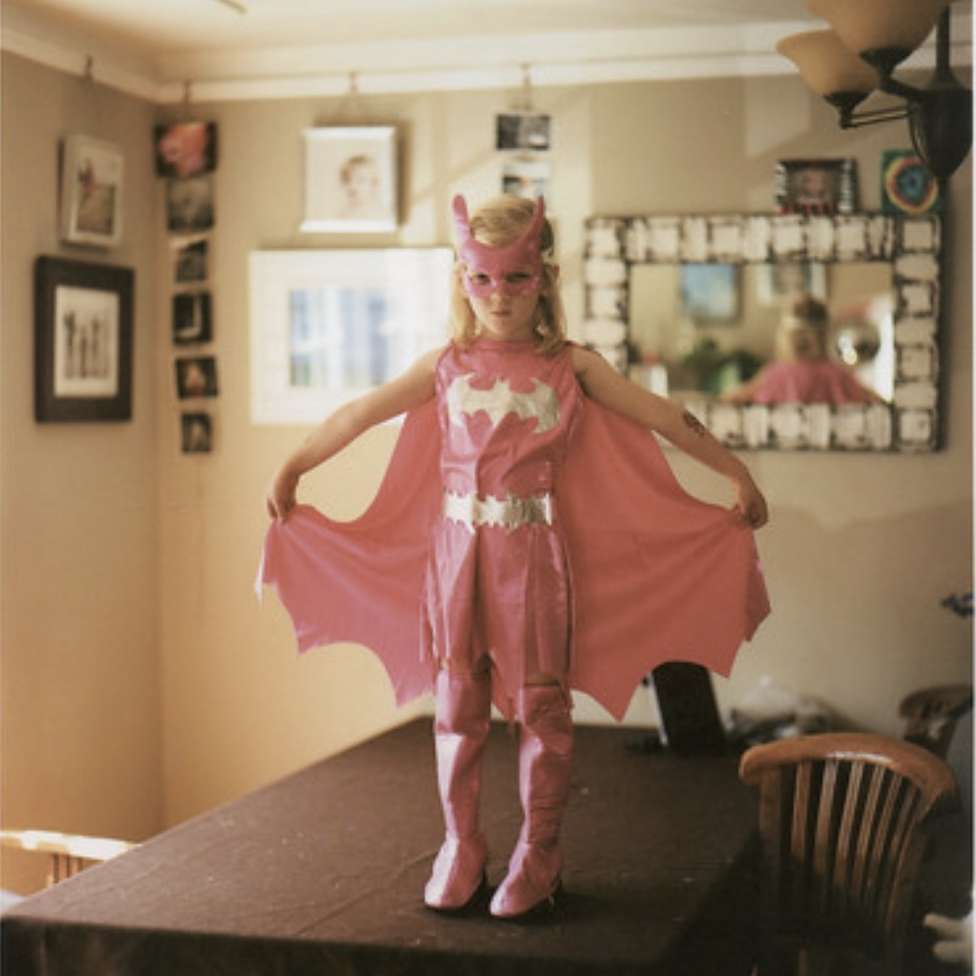

About Me
I’m Liz, an artist working across photography, digital media, sound, and textiles.
This site is a collection of projects organized by year (more like an archive than a portfolio).



I’m Liz, an artist working across photography, digital media, sound, and textiles.
This site is a collection of projects organized by year (more like an archive than a portfolio).
